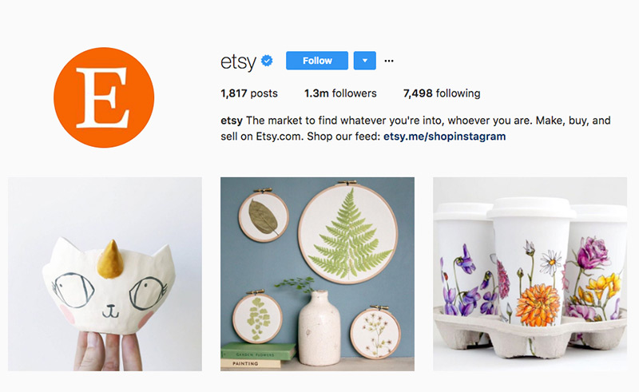
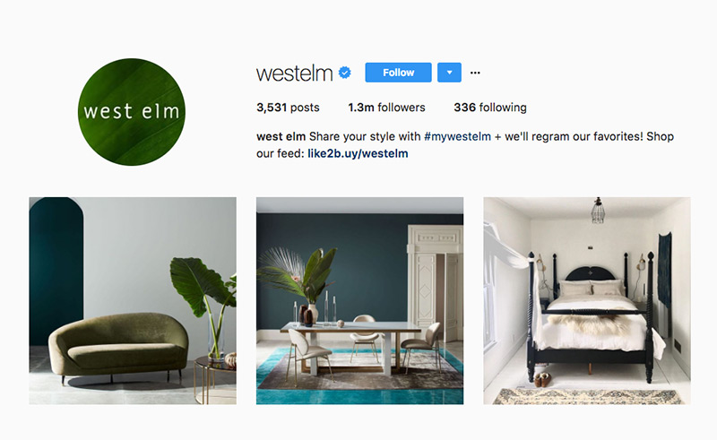
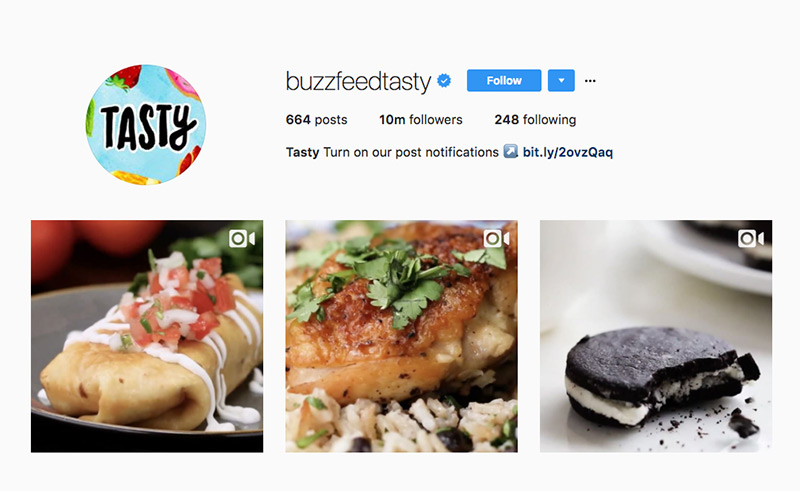
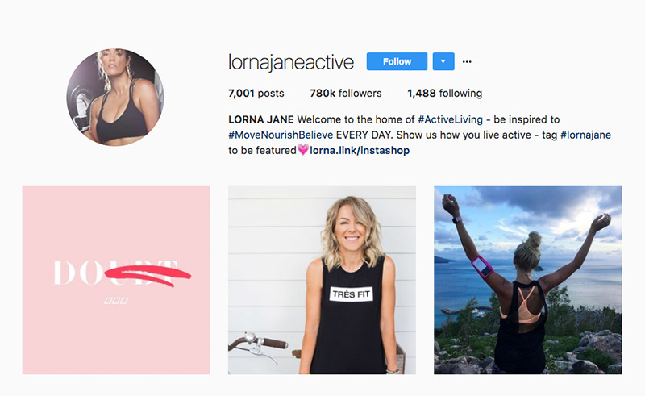
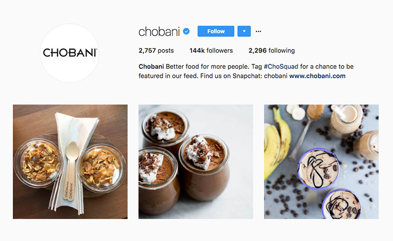
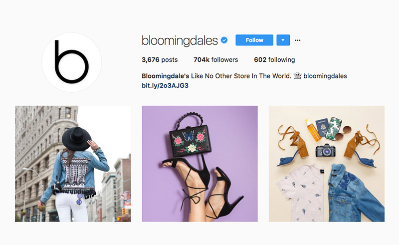
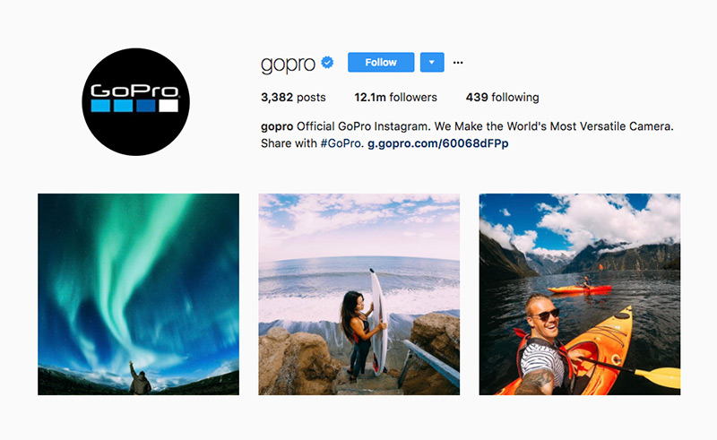
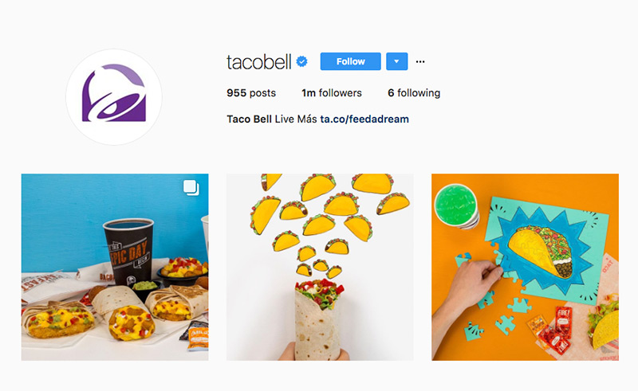
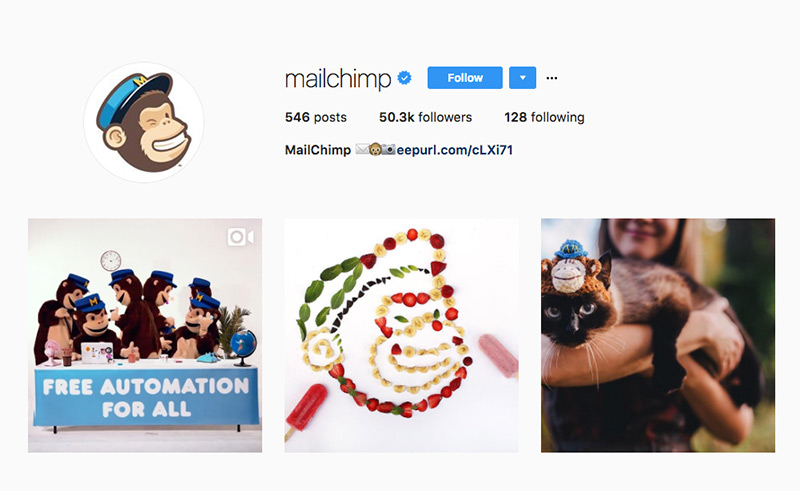

Instagram is a great social platform for visual storytelling and building brand awareness. Lindsay Kolowich, Senior Marketing Manager at HubSpot, views Instagram as “a unique opportunity to visually represent your brand, celebrate its personality, and keep it top-of-mind for all those users who scroll through their Instagram feeds every single day.” With 600 million users (62% of which follow a brand) and new shopping features rolling in, brands need to perfect their Instagram game and use this platform to it’s fullest potential.
The following brands’ accounts will get you inspired!
Etsy
Etsy is a global creative commerce platform. Etsy’s Instagram account has a delicate look and feel, and highlights some of their most unique products. The brand encourages follower engagement through awesome contests tailored to their type of follower (for example: Etsy Kitchen Makover). This account also takes you behind the scenes into some of their most popular sellers’ studios.

West Elm
Followers can find the latest collections as well as helpful home décor tips and ideas. The hashtag #mywestelm connects followers and encourages them to post photos of their homes as a way to share inspiration with other Instagrammers who have similar interests.

Tasty
For all the foodies on Instagram, BuzzFeed’s Tasty dominates the food posts on this social platform. Filled with short, but addictive cooking videos, Tasty gets millions of views and interactions. Part of their success is due to the simplicity of the videos that can be seen without sound. To complete the experience, each video is accompanied by easy instructions with bare minimum text.

Lorna Jane
Lorna Jane’s account bridges the gap between fashion and fitness. By staying true to their active living philosophy, the account provides a burst of motivation and loads of inspiration!

Chobani
With yummy and healthy looking pictures and recipes, Chobani’s account shares different and unexpected ways to use their products. Jessica Lauria, Director of Brand Communications at Chobani says:
“Instagram is a great platform for Chobani. It allows us to show how people actually use our product and inspires new ways to savor.”

Bloomingdales
Energetic, fun, vibrant! Bloomingdale’s Instagram account is eye candy and makes double-tapping hard to resist.

NASA
Filled with breathtaking shots of space, NASA’s Instagram account is out-of-this-world! NASA’s account is a nice break from product and people focused posts on your feed and a great way to wake up your intellectual curiosity.
GoPro
GoPro makes “the world’s most versatile cameras” and their Instagram account reflects just that. With their “Photo of the Day” posts, they encourage GoPro lovers to share their adventures for the chance to be featured on the brand’s Instagram account and be seen my GoPro’s 12+ million followers.

TacoBell
TacoBell is a social media sensation and their Instagram profile is no exception! TacoBell shows its personality through their witty responses and captions. In addition to their humor, the account provides value to users by posting about their latest products and discounts.

MailChimp
MailChimp is the world’s leading email marketing platform. Their Instagram account does a good job of turning a serious topic fun and engaging. This account uses playful illustrations, animations, and a featured mascot to leave followers with a good feeling about the company.

Author – Mariana Herrera